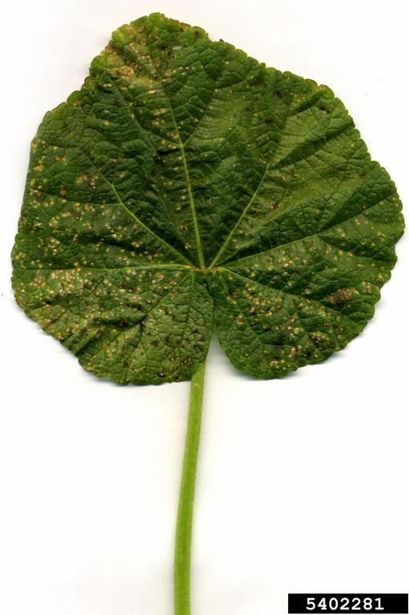

List of Diseases-
1) Bacterial blight or Angular leaf spot or Black arm: Xanthomonas campestris pv.
Malvacearum: This disease was first observed in Tamil Nadu in 1918.
Symptoms: The bacterium attacks at all stages from seed to harvest. Usually, five common
phases of symptoms are noticed.
i) Seedling blight: Small, water-soaked, circular or irregular lesions develop on the
cotyledons. Later, the infection spreads to stem through petiole and causes withering and
death of seedlings.
ii) Angular leaf spot: Small, dark green, water-soaked areas develop on the lower surface of
leaves, enlarge gradually and become angular when restricted by veins and veinlets and spots
are visible on both the surface of leaves. As the lesions become older, they turn to reddish
brown color and infection spreads to veins and veinlets.
iii) Vein blight or vein necrosis or black vein: The infection of veins causes the blackening
of the veins and veinlets, gives a typical „blighting‟ appearance. On the lower surface of the
leaf, bacterial oozes are formed as crusts or scales. The affected leaves become crinkled and
twisted inward and show withering. The infection also spreads from veins to petiole and
causes blighting leading to defoliation.
iv) Black arm: On the stem and fruiting branches, dark brown to black lesions are formed,
which may girdle the stem and branches to cause premature drooping off of the leaves,
cracking of stem and gummosis, resulting in breaking of the stem which hangs typically as
dry black twig to give a characteristic “black arm” symptom.
v) Square rot / Boll rot: On the bolls, water-soaked lesions appear and turn into dark black
and sunken irregular spots. The infection slowly spreads to the entire boll and shedding occurs.
The infections on mature bolls lead to premature bursting of bolls. The bacterium
spreads inside the boll and lint gets stained yellow because of bacterial ooze and loses its
appearance and market value. The pathogen also infects the seed and causes a reduction in
the size and viability of the seeds.
Pathogen: The bacterium is a short rod with a single polar flagellum. It is gram-negative,
non-spore forming. The bacterium enters through natural openings or insect caused wounds.
Favorable Conditions: Optimum soil temperature of 28oC, the high atmospheric
temperature of 30-40oC, relative humidity of 85 percent, early sowing, delayed thinning, poor
tillage, late irrigation and potassium deficiency in the soil. Rain followed by bright sunshine
during the months of October and November is highly favorable.
Management:
Remove and destroy the infected plant debris
Follow crop rotation with non-host crops.
Grow resistant varieties like HG-9, BJA 592, G-27, Sujatha, 1412 and CRH 71. Suvin
is tolerant.
Delint the cotton seeds with concentrated sulfuric acid at 125 mL/kg of seed.
Treat the delinted seeds with Carboxin at 2 g/kg seed or soak the seeds in 1000 ppm
Streptomycin sulfate overnight or treat the seed with hot water at 52-56oC for 10-15
minutes.
Spray with Streptomycin sulfate (Agrimycin 100), 500 ppm along with Copper
Oxychloride at 0.3%.2) Fusarium wilt- Fusarium oxysporumf.sp. vasinfectum
Symptoms:
